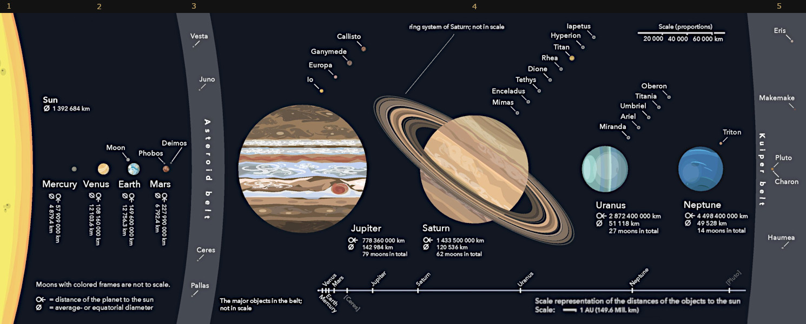

1.
Our Sun2.
Mercury Venus Our Moon Mars3.
Asteroid Belt4.
Jupiter Saturn Uranus Neptune5.
Pluto6.
CometsThe Solar System is the gravitationally bound system of the Sun and the objects that orbit it. Of the objects that orbit the Sun directly, the largest are the eight planets, with the remainder being smaller objects, the dwarf planets and small Solar System bodies.
The Solar System formed 4.6 billion years ago from the gravitational collapse of a giant interstellar molecular cloud.
The diagram below gives an overview of the Solar System. The Sun, planets, dwarf planets and moons are shown at scale for their relative sizes but not for distances. A distance scale is given at the bottom of the diagram. Moons are listed near their planets by their orbits; only the largest moons are shown.
Reference: Wikipedia - Solar System
Spacecraft have successfully visited the following Solar System objects:
List numbers refer to the head menu and diagram zones below.
The diagram below shows a comprehensive overview of the Solar System. [Reference: Wikipedia - Solar System Diagram (credit: Wikimedia - Beinahegut)]
This article gives an overview of the spacecraft and rockets used in the exploration of our Solar System. The emphasis is on the technical aspects with an outline of the missions and their objectives.
Only spacecraft which left Earth orbit and performed successful or partially successful missions are covered. Some spacecraft missions included multiple objectives.
In orbital mechanics a gravity assist maneuver is the use of the gravity of a planet or other astronomical object to alter the path and speed of a spacecraft, typically to save propellant and reduce expense.
A number of spacecraft used this maneuver to reach their mission objective(s). These fly-bys are not included in the mission tables unless specific observations were made during the encounter.
This article contains nine summary pages of spacecraft missions, to date, to Solar System objects. These cover: The Sun, Mercury, Venus, Earth's moon, Mars, The Asteroid belt, Dwarf planets, Asteroids, Outer planets (Jupiter, Saturn, Uranus, Neptune), Pluto, Comets.
Each page also includes a gallery of the spacecraft and launchers used for the mission.
A page is also included with an alphabetical list and gallery of all spacecraft included in the above missions.
Source references are given in the body of the article. Image source credits are given in the full size image captions. (Click on gallery thumbnails for larger images.)
This gallery contains images of the main Solar System objects visited by spacecraft. (Numbers on the thumbnails below refer to the zones on the diagram above.)
Thumbnails: Click on a thumbnail image to enlarge it. | Enlarged image: Click on right side of image for next image or on left side for previous image. Click outside image to close.
The Sun
Inner Planet Mercury
Inner Planet Venus
The Moon
Inner Planet Mars
Dwarf Planet Vesta
Dwarf Planet Ceres
Asteroid 951 Gaspra
Asteroid 243 Ida
Asteroid 253 Mathilde
Asteroid 433 Eros
Asteroid 9969 Braille
Asteroid 5535 Annefrank
Asteroid 25143 Itokawa
Asteroid 132524 APL
Asteroid 2867 Šteins
Asteroid 21 Lutetia
Asteroid 4179 Toutatis
Asteroid 162173 Ryugu
Asteroid 101955 Bennu
{kind=link}
{kind=link}
{kind=link}
{kind=link}
{kind=link}
{kind=link}
{kind=link}
{kind=link}
{kind=link}
{kind=link}
{kind=link}
{kind=link}
{kind=link}
{kind=link}
{kind=link}
{kind=link}
{kind=link}
{kind=link}
{kind=link}
{kind=link}
{kind=link}
{kind=link}
{kind=link}
{kind=link}
{kind=link}
{kind=link}
{kind=link}
{kind=link}
{kind=link}
{kind=link}
{kind=link}
{kind=link}
{kind=link}